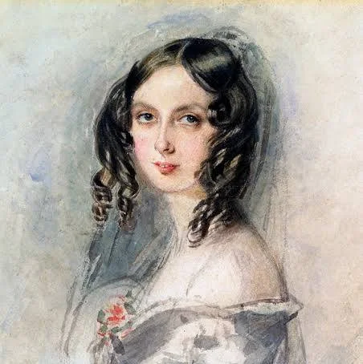

Ada Lovelace
La primera programadora de la Historia

Per què és rellevant:
- Va traduir i anotar el treball sobre la Analytical Engine de Charles Babbage.
- Va descriure com la màquina podria anar més enllà dels càlculs i manipular símbols. Idea bàsica de la programació.
- És considerada per molts com la primera persona en crear un algorisme pensat per a ser executat per una màquina.
Aquí podeu trobar un vídeo relacionat amb aquest personatge
Vídeos sobre Ada Lovelace a YouTube